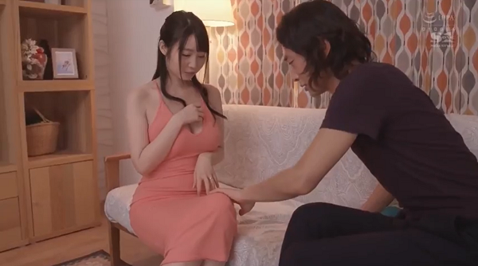

Đây là truyện tưỡng tượng 100% , nhân vật, địa danh , thời gian , không gian , nơi chốn ,vvvv….tất cã đều là do bịa đặt, nếu có sự trùng hợp nào là do ngoài y’ muốn , chỉ là muốn góp vui vài phút cho các bạn thích đọc truyện phong lưu diễm tình . Ai đọc xong rồi nói truyện tà dâm thì xin đọc lại lần nữa , lần nữa . Chua’ Jesus xưa kia có nói :”Chớ tà dâm”, (như vậy “chính dâm” thì cứ việc tự do làm tới) . Truyện này chỉ cố gắng nói lên y’ nghỉ đó : khuyên nhủ đừng tà dâm .
NĂM 2000 tôi về VN thăm quê nhà sau gần hai mươi năm xa cách . Sau khi gặp gở họ hàng thân quyến , tôi đi tìm lại bạn bè củ để thăm viếng . Kẻ mất người còn , người tha hương như tôi ,kẻ cố ra đi 5 lần 10 lượt không xong , kẻ làm ăn nên ra giàu co’ , người sống nghèo nàn chật vật , đủ cả . Trong một buổi họp mặt cuối tuần , một anh bạn của tôi bất chợt nhớ ra nói :
– Anh Bờm này , anh có thì giờ rảnh rổi , ngày mai đi với tôi đén một chổ này , gặp một người . Chắc là không uỗng công anh về Vn chuyến này đâu ….
Tôi trã lời :
– Ai vậy ?!…..
– Âỵ ! Nếu anh muốn biết , ngày mai đi với tôi rồi anh sẽ biết , không uỗng công đâu !

Tò mò , hôm sau tôi theo anh bạn lên xe đò đi ra khỏi thành phố . Xe chạy suốt cả ngày , đến khi trời đã xế chiều , chúng tôi mới xuống xe đi bộ mấy tiếng đồng hồ nữa , đến một vùng dân cư thưa thớt , ruộng nương khô cằn , xa xa mới có một mái nhà lá nghèo nàn . Đến một chân núi có một ngôi nhà lá cao ráo trên một vuông đất khang trang có tấm bảng ” Chữa bệnh miễn phí ” , bạn tôi dẩn tôi đi vào như đã quen thuộc từ lâu . Bên trong nhà chỉ có môt người đang ngồi làm việc gì đó bên ánh đen` dầu soi không đũ sáng cả nhà . Thấy chúng tôi vào , người đó nhìn lên .
Bạn tôi hỏi :
– Bây giờ gặp nhau , anh còn nhớ là ai đây không ?
Chúng tôi lặng im nhìn nhau . Bất chợt , tôi nhìn ra ,kêu lên :
– Úy trời !Có phãi là anh Thơm , trước ở Tiểu bang Redcherry không ?
Ông ta cũng vừa nhận ra tôi :
– Anh la` Bòm ở thành phố Trillium đây mà ?
Mừng quá chúng tôi ôm nhau , không ngờ là còn găp lại nhau trên đất quê hương . Tối đó sau bữa cơm dưa muối , ba chúng tôi nằm thức suốt đem ôn chuyện đời . Sáng hôm sau , sương núi còn mờ mờ chúng tôi thức dậy pha trà uống , anh Thơm cố cầm giữ tôi ở lại thêm mấy ngày không được vi` sắp đến ngày tôi phải lên phi cơ trở về . Mặt trời rạng hồng một góc trời đông , lác đác có mấy người dân trước cửa vào xin chữa bệnh . Anh Thơm bịn rịn tiễn tôi và anh bạn ra về cho kịp chuyến xe . Anh chạy vào nhà lấy ra một cuốn sổ nhỏ đưa cho tôi , nói :
– Biết có còn gặp nhau lần nữa hay không , anh Bòm đoc. tập sách nhỏ này sẽ hiểu tại sao tôi đang sống ở môt nơi văn minh ,tiện nghi tân tiến nhất thế giới , bản thân giàu có danh vọng nhiều người ước mơ được như tôi mà tôi lại bỏ hết cả về đây sống đời áo vá ,cơm rau thanh đạm cuối đời . Không đi tu mà như là xuất thế đi tu , chẵng là đạo Chúa cũng chẵng là dạo Phật , mà hòa nhập với Đời để giúp Người , những người nghèo khổ ở chốn thâm sơn cùng cốc này . (còn tiếp).
*Redcherry : Red-chery : trái dâu xê-ry đỏ
*Trillium : Mot loại hoa trắng có ba cánh ,nở vào tháng 5 , như những tấm thãm trắng khắp mặt đất ,ỏ Bắc Mỹ .
*
* *
Biết còn gặp lại lần nữa hay không …..? ….Tôi nhìn người đang đứng trước mặt tôi .Người bạn từ thuở học trò từng tranh cao thấp giải bài toán khó , cùng mê một tà áo dài thước tha , vào quân ngũ cùng chia nhau diếu thuốc lá giữa rừng quân trường . Chia tay nhau khi ra trường ,đến khi non nươc đổi màu cờ , tôi vượt biên , tình cờ gặp lại nhau trên đất khách , cùng cất tiếng cười kha kha kha… tưởng mày chết rồi …Rồi vì công ăn việc làm ,tôi và bạn lại chia tay , kẽ Đông người Tây . Thĩnh thoãng tôi có nghe nói anh được lên Tivi dược Thống đốc này , Thị Trưỡng nọ trao tặng giải thưỡng Di Dân Thành Công trong năm kia năm kìa,trong lòng lại thấy vui vui ,mừng cho bạn .
Bây giờ gặp lại nhau trên đất quê hương ,bạn tôi đứng đó trong bộ quần áo nâu dân quê bạc màu củ kỷ ,tóc đã bạc nữa mái đầu , nụ cười ấm áp hiền hòa . Có gì không trong dôi mắt vẫn còn tinh anh thiêt tha với đời ,nhưng hình như gợn chút mây buồn ?.
Tôi nhìn quanh những mái nhà thấp thoáng dưới màu xanh vườn lá bao quanh , những con đường làng đất bằng phẵng học trò đang tung tăng đến trường , người người đang ra đồng làm viêc . Ai đi ngang qua chúng tôi đeu chào hỏi bạn tôi . Có phải bạn tôi đã bỏ tất cã vinh quang giàu có ở xứ người ,về đây làm một người tầm thường để cùng đóng góp một bàn tay cho quê huong ?
Biết tương lai còn có găp nhau nữa không hay đây là lần gặp nhau cuối đời ….Tôi và bạn chia tay bịn rịn tưởng không rời ……
*
* *
Trên phi cơ bay về ….xứ người . Tôi mở quyễn sổ viết tay của anh Thơm ra đọc . Lòng miên man nghỉ đến anh , tôi hiểu một điều là khi anh đưa cho tôi quyễn sổ này là anh đã dứt khoát,chôn chặt quá khứ và những ngày còn lại của đời anh chỉ còn là ngôi làng quê nhỏ bé bên chân núi xa xôi đó :
TÔI LÀ MỘT DOANH NHÂN , một doanh nhân thành công trên thương trường Bắc Mỹ .
Khởi đầu , tôi cũng gặp những khó khăn như bao người mới đến trên đất nước xa lạ này . Tôi chịu khó ban ngày đi làm ban đêm đội tuyết đi học thêm ngoại ngữ . Dịp may đến với tôi lúc nào không hay khi môt người bạn cùng lớp nhờ tôi phụ giúp sữa nhà cua anh vào những ngày cuối tuần . Khi xong công viêc thì người bạn đề nghị :
– Tai sao hai dứa mình không hơp lại đi sữa nhà cuối tuần kiếm chút đỉnh tiền thuốc lá , đổ xăng …hỉ ? .
Tôi đồng ý liền không do dự ,vì tôi đang cần tiền :vợ tôi còn đang đi học lại để lấy lại cái Bằng Giáo Sư Toán và cuối tuần thì nàng vẫn có thì giờ săn sóc hai đứa con còn nhỏ .
Công viêc trôi chảy cho đến lúc bạn tôi coi tôi đương nhiên là Trưỡng Nhóm vì tôi nói tiêngAnh giỏi hơn và có tài ăn nói bắt những khách hàng “cù cưa” phài moc’ túi ra trã tiền sòng phẵng.
Từ từ công viêc mỗi lúc một nhiều hơn , khách hàng đông đến nỗi tôi làm luôn toàn thời ,rồi chạy mướn thêm người thêm thợ để làm việc cho kịp thời hạn . Đến lúc tôi phải mướn một văn phòng và có thư ký thì tôi trở thành một ông chủ lúc nào không hay…
Tôi chơi bạo thêm một cú nữa là dốc hết vốn liếng mua mot căn nhà củ , sữa sang lại chắc chắn ,hoàn toàn đẹp mắt rồi bán lại . Chuyến đó tôi lời gấp đôi , một tháng làm việc bằng lợi tức của hai ba năm cộng lại.
*
* *
Với số tiền lời đó tôi “không ngủ quên trên chiến thắng” , tôi chơi bạo mua thêm mấy căn nhà nữa , rồi “bổn củ soạn lại” và tiền đẽ ra tiền . Cùng lúc trong tay tôi có gần 100 nhân viên đay` đủ ngành nghề xây cất và nhân viên văn phòng ,có luôn cả luât sư chuyên ngành về luật xây dựng để cố vấn cho tôi về luật pháp.
Đến đây thì ngôi trường củ, ngày nào tôi mới chân ướt chân ráo đến định cư học ESL (English as Second Language), bây giờ họ mời tôi đến dạy những course buổi tối về xây cất và quản trị ,điều hành về kinh doanh xây cất cho chính người bản xứ .Thỉnh thoãng ra phố một vài học viên da trắng gặp tôi họ cúi đầu chào gọi “Sir” khiến cho đồng hương tóc đen mở to mắt ngạc nhiên .
(* dựa theo chuyện có thật : môt bà nọ mới định cư đươc 3 năm ở Băc Mỹ mở một tiệm, rồi hai , rồi ba , rồi dây chuyền Tiệm Phở ở nhiều thành phố khác nhau , đươc trường củ (ESL) mời về giãng dạy course kinh doanh restaurant).
Ví phỏng đường đời bằng phẵng cả ,
Anh hùng , hào kiêt có hơn ai .
Hai câu thơ xưa của cụ Nguyễn Công Trứ thế mà đúng phong phóc . Đừng nghỉ rằng công ty xây cất của tôi cứ như thế mà đi lên, lượm tiền bỏ vào túi qua công trình này đến công trình khác . Còn nhưng Công ty khác trong thành phố , nhất là nhưng công ty của người bản xứ , họ đâu có để yên cho một tên vô danh tiểu tốt tung hoành trong ngành xây dựng của họ . Họ cũng kèn cựa , phá giá , kiếm chuyện tùm lum .(Cắt bớt truyện để dẩn nhanh hơn vào đề tài chính)
Chuyên này thì tôi may mắn lo toan từ lúc đầu . Tôi noi’ với những người thợ bản xứ chuyên môn về Điện , Ống nươc , Hơi đốt , Lò Sưởi , Mộc ,Hồ ,Máy Lạnh…Mấy anh cho môt vài thằng em tóc đen (VN) theo làm phụ viêc ,tôi sẽ chia cho mấy anh cái hợp đồng này . Oke.
Xong toi khuyến khích anh em mình chiu cực ngày làm ,tối đi học thêm nghề mình đang làm . Có thiếu tiền thì tôi phụ chút đĩnh tiền học phí . 6 tháng , 1 năm sau phải có cái Bằng Chuyên Nghiệp Hành Nghề như luât định , anh em đến làm Thợ Chánh cho tôi , tôi trã lương cao hơn chổ khác môt chút .
Như vậy , chúng tôi luôn luôn có hơn môt chút tình cãm với nhau , và nhất là hoàn toàn tin tưởng nhau trong việc làm ,nên công ty tôi nôi tiếng về chât lượng xay cât đẹp , bền , chắc chắn hoàn tất hợp đồng đúng thời hạn , nhât là giá thành luôn thấp hơn những công ty khác môt chút Tôi có lời không ? có chứ ,ít thôi vì tôi quan niêm làm cho nhiều lắm tôi cũng chỉ có một cái bao tử đẻ chứa cơm mỗi ngày ,nên tôi chia bơt cơm cho người khác nữa .
Nhờ thế về măt lâu dài , hữu xạ tự nhiên hương khách hàng kéo đến tôi không dứt và liên tiêp nhiều năm công ty tôi đoạt đươc nhiều giải danh dự của thành phố và tôi đươc biểu dương là Di Dân Thành Công , Công Dân Danh Dự của thành phố của Tiểu Bang
Không cạnh tranh nổi , nhưng những tay tư bản đâu có để cho tôi yên . Họ đề nghị mua đứt công ty của tôi với môt giá cao , còn tôi họ mời làm Giám Đốc có phần hùn với công ty của họ . Sau khi bàn bạc với vợ tôi , tôi chấp thuân đề nghị của họ .Vì cac con đã lớn ,vào Đại Học . Vợ chồng tôi bươc vào tuổi trung niên , vợ tôi đi dạy học làm vui chẵng vì sinh kế , chúng tôi đã dành được một khoãng tiền nhỏ để có thể về hưu non nếu muốn.
Bây giờ bán công ty buồn thật đó , nhưng không còn cực nhọc quần quật từ sáng đén tối như trước , mà tôi xách căp hồ sơ đi ky’ hợp đồng và thanh tra công trường như đi du lịch xuyên bang khắp nơi .
Và đây hình như định mạng đã sắp xếp đén thời điễm tôi găp em , nên dù trong đời tôi chỉ yêu một người , biết thân thể chỉ môt người , đó là vợ tôi . Nhưng tôi sẽ gặp em , phải gặp em vì định mạng đã sắp đặt như thế .
*
* *
Tôi và em như hai đoàn tàu xe lữa chạy trên hai đương rầy riêng biệt , nhưng môt lỗi lầm định mạng nào đó xãy ra , khiến hai đường rầy chập lại và hai đoàn tàu phải chạy đụng vào nhau .
Tôi được mời đén tiểu bang Wild Rose (Hoa hồng Dại) cách Redcherry bốn giờ bay để khảo sát vài kế hoạch xây dựng . Công việc có thể kéo dài nhiều tháng vì sau khi hơp đồng đươc ký kết thì tôi sẽ thanh tra tiến trình và tốc độ thi công của các công trường hầu chuẩn bị cho những hợp đồng trong tương lai . Tôi đựoc ở trong một hotel sang trọng để tiện nghỉ ngơi làm việc , cũng như đươc cấp cho một chiếc xe de luxe mới nhất để đi lại .
Lúc đầu , vào những dịp cuối tuần vợ con tôi cũng bay qua để thăm viếng tôi và dạo cãnh Wild Rose hoăc tôi bay về Redcherry để nghỉ ngơi bên vợ con . Nhưng dần dần rồi cũng thưa đi , có khi một tháng tôi mới về nhà một lần vì cong viêc cùa vợ tôi và của tôi , nhất là của tôi , đều cần thời gian có mặt tại chổ để nghiên cứu .
Có lúc rãnh rỗi cuối tuần tôi đọc báo Việt Ngữ của người Việt tại địa phương và ddể giải trí tôi đến tham gia sinh hoạt Tết Trung Thu của Cộng Đồng Người Việt Raincity (thành phố Mưa) . Chương trình văn nghệ do cac sinh viên VN của Đại học Rainbow trình diển cho thieu nhi thật là hay . Tối đó khi ra về , tôi chở dùm ba bốn em trai , gái sinh viên về nhà các em vì trời đã khuya và đổ mưa .
Môt hôm tôi vào Thư viên để tìm kiếm số liệu “building code” của địa phương thì gặp một cô gái đang ngồi học bài . Cô nhìn tôi , đến chào tôi , tự giới thiệu . Tôi chơt nhớ ra cô sinh vien MC chương trình Tết Trung thu mà các bạn cô gọi đua` là Nguyễn Cao Kỳ Cục và cô là một trong những sinh viên tôi đưa vè nhà buổi tối hôm đó .
Cô tên là Vân
*
* *
Vân gọi tôi bằng chú .
Vân mắt to môi hồng , tóc xõa ngang vai , như dể bị chìm khuất vào đám đông . Nhưng khi đứng riêng ra thì Vân nổi bật lên nhờ dạn dỉ và có duyên ăn nói . Sau này , tôi khám phá bản tính Vân rất hiền lành ,thành thật, nghỉ tốt cho người khác , làm gì cũng nghỉ đến người khác trước khi nghỉ đén mình .
Buổi chiều hôm đó tôi mời Vân đi ăn cơm tối . Thật ra , tôi ăn một mình cũng buồn , nên thường tìm mời một người nào đó cùng ăn. Có lẽ vẻ thành thật , tự nhiên và tôn trọng Vân như một người bạn , của tôi ,khiến Vân ban đầu hơi ngần ngại rồi chấp thuận . Tối hôm đó chúng tôi đã có môt bửa cơm ngon và thật vui .
Khi đưa Vân về ,tôi cũng biết thêm Vân vừa học vừa làm ,ở riêng một apartment , không có gia đình thân nhân nào khác ngoài một người cô họ xa ở Springville (Làng Xuân)cách Raincity chừng 100 dậm .
Thời gian sau đó , liên tiếp có những dịp không hẹn mà gặp , tình cờ mà gặp với Vân khiến tình cảm tôi và Vân càng thêm khắng khít ,tự nhiên . Có lần tôi đi ngang qua một campus thì gặp Vân từ trong đi ra .
– Hi chú . Sao chú biết Vân học ở đây mà đến đón ?
– Hi Vân , chú có việc đi ngang qua đây ! Chú đâu có thời biểu của Vân . Tối nay Vân muốn đi ăn ở đâu ?
– Hihihi …tùy chú …hihihi…
Tôi luôn luôn mời Vân cùng đi ăn tối vì tôi biết cuộc sống của các sinh viên tự lập rất chật vật , xữ dụng một cái vé xe bus cũng phải tính toán lộ trình trước , muốn chi tiêu mua một món đồ gì phải cộng trừ nhân chia trước cả tháng và không cần phải nói là ăn uống hàng ngày rất kham khổ .
Tôi mời Vân ăn cơm như một chia xẽ , bù đắp vì tôi nhớ đến hai con tôi ,Tí và Tèo nều rơi vào hoàn cảnh sinh viên tự lập , sẽ giống như Vân mà thôi . Nhưng Vân rất tế nhị , thỉnh thoãng Vân tặng tôi một CD nhạc hòa tấu cổ điển tôi thích thưỡng thức khiến tôi khó lòng từ chối .
Để đáp lại thỉnh thoãng tôi đề nghị Vân nấu cơm VN cho tôi ăn , vì ăn restaurant hoài ngán quá . Dỉ nhiên là tôi đi chợ và cố tình mua that nhiều thưc phẫm tươi,khô, đông lạnh nhét thật đầy vào tủ lạnh vào tủ bếp của Vân .
Như vậy đó tình cãm giữa tôi và Vân phát triễn một cách tự nhiên , chân thành . Tôi xem Vân như một đứa con gái nhỏ của mình , Vân xem tôi như một người chú, một người bố của Vân . Đến nổi thỉnh thoãng Vân có những câu hỏi nhỏ nhặt nhưng không biết hỏi ai :
– Chú ơi , anh chàng Cao văn Ròom tặng con một chai nước hoa .Thế người phụ nữ xức nước hoa ở đâu trên thân hả chú ?
– Chú thấy Cô thường xức ở phía sau hai vành tai , hai cổ tay , hai bên nách , giữa đồi ngực , và còn một chổ nữa chỉ khi nào con lập gia đình rồi mới xức vì chỉ có một người là chồng con thưỡng thức mùi thơm ở đó thôi .
– Ừm ….thôi chú nói con biết luôn đi ….
– Ở phía dưới rún đó ….
– ….làm sao mà …!!!???….Á á á á chú này bậy quá đi….
– Thì con muốn biết cho tường tận mà…..
Một lần nọ tôi phone thì biết Vân đang bị cãm , nằm ở nhà . Tôi đến thăm và chở Vân đi Bác Sỉ khám bệnh . Về uống thuốc xong , Vân nằm trên giường , tôi vừa đọc báo vừa nấu cháo cho Vân . Vân ngâp ngừng hỏi tôi :
– Chú ơi , các bạn con đang giữa kỳ học thi , không ai chịu đến giúp con . Chú có thể cạo gió giùm cho con không ?…..
Cạo gió …..cái món trị bệnh cổ truyền Vn này ….có khi cũng hiệu nghiệm trong một số trường hợp ….nhưng….
– Con uống thuốc rồi , một vài giờ nữa sẽ khỏi bệnh thôi. Thêm nữa chú và con là……
– Con hiểu , nhưng con tin chú …..
Vân tin tôi .Tôi cũng tin chính mình nữa ,một cách ngay thẵng như Vân là con gái của mình . Vân quay vào tường cởi áo ra , nằm sấp xuống , hai tay xuôi theo hai bên hông cho tôi cao gió trên mãng lưng thon mịn màng . Xong, Vân mặc áo vào thì cháo cũng vừa chín tới , Vân ngồi dựa vào ngưòi tôi để tôi đút từng muỗng cháo nóng cho đến khi Vân no không ăn được nữa . Tôi bế Vân đặt lên giường , đấp mền, chờ cho đến lúc Vân ngủ tôi mới rón rén bước ra , khóa cửa . Lái xe về , lòng nhẹ lâng lâng thanh thãng .
Hôm sau quả nhiên Vân hết bệnh . Từ đó tôi và Vân như đã hiểu nhau , càng thêm khắng khít như bố con , có khi tôi đến thăm ngồi ở sofa xem Tivi , Vân làm bài xong , nhảy vào lòng tôi ngồi cùng trò chuyện .
Tôi hỏi lòng mình có phải vì tôi chỉ có hai đứa con trai nên xem Vân như con gái mình không ? và Vân thiếu thốn tình cãm gia đình nên xem tôi như một ông bố ? Có that vây không ? Có xúc động tình dục không ? Xem ra Vân vẫn hồn nhiên ngây thơ ngồi trong lòng tôi . Còn tôi , khi những đồi nương da thịt mềm ấm tiếp xúc qua lần vải quần áo , thoạt đầu cũng có gợn lên những cơn ham muốn , nhưng tôi tĩnh trí , định tâm lại xua đuổi đám mây đen bay ra khỏi đầu và tôi trở lại bình thường .
Nhưng rồi một hôm tai nạn xãy tới .
Hết